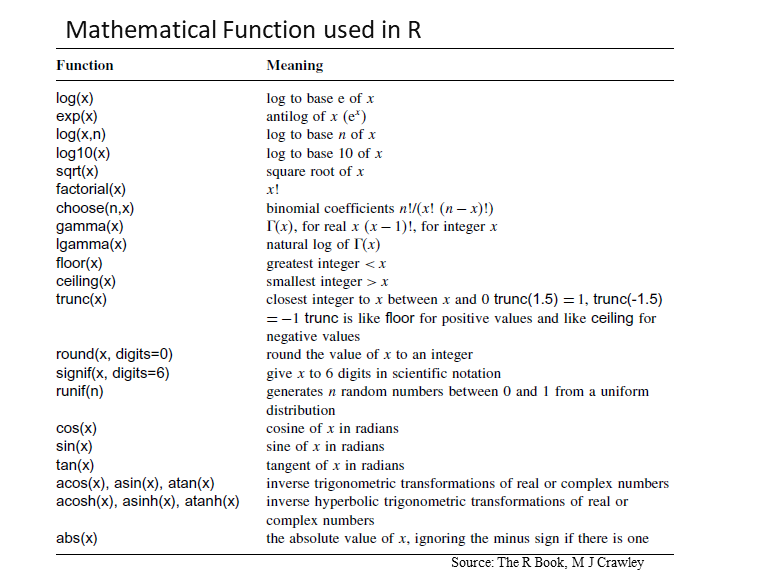
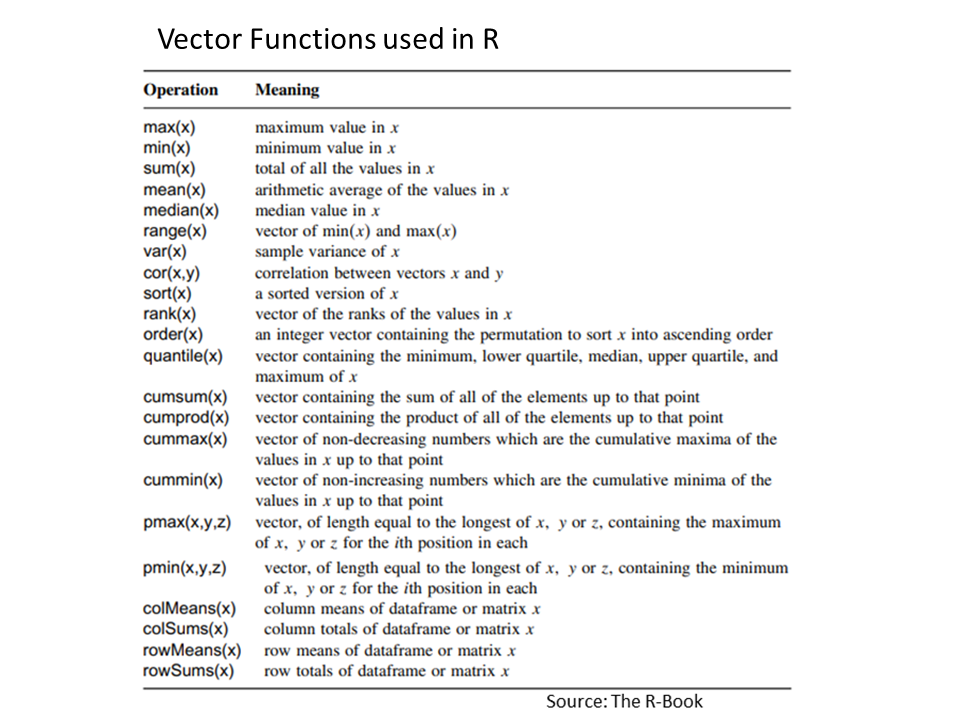

The screen prompt > in R-console is an place to put command or instruction for R to work. Press the “Ctrl” + “L” keys simultaneously. The screen will now be refreshed and the console should be cleared.
We can use R as a calculators
At the prompt, we enter the expression that we want evaluated and when we hit enter, it will compute the result for us . For Example:
Use - for subtraction. Use * for multiply. Use ^ for raised to the power of. Use parentheses to ensure that it understands what you are trying to compute. The order of doing arithmetic operations is (left [done first] to right [done last]) ^ / * - +
There are so many built-in mathematical functions are available in base-R. Some are shown in below table.
Here below some examples of R built-in R-functions
log10(2)## [1] 0.30103exp(1)## [1] 2.718282pi## [1] 3.141593sin(pi/2)## [1] 1We can use very big numbers or very small numbers in R using the following scheme:
1.2e3 # means 1200 because the e3 means ‘move the decimal point 3 places to the right ## [1] 12001.2e-2 # means 0.012 because the e-2 means ‘move the decimal point 2 places to the left’## [1] 0.012We can use notation* %/% (percent, divide, percent) and %% (percent, percent) to obtained Integer quotients and remainders, respectively. Suppose we want to know the integer part of a division: say, how many 13s are there in 119:
119 %/% 13## [1] 9Suppose we wanted to know the remainder (what is left over when 119 is divided by 13: in maths this is known as modulo
119 %% 13## [1] 2Several types of rounding (rounding up, rounding down, rounding to the nearest integer) can be done easily with R.
The ‘greatest integer less than’ function is floor()
floor(5.7)## [1] 5The ‘next integer’ function is ceiling()
ceiling(5.7)## [1] 6Just like in algebra, we often want to store a computation under some variable name. The result is assigned to a variable with the symbols = or < - which is formed by the “less than” symbol followed immediately by a hyphen.
x<-10; # or
y = 12When you want to know what is in a variable simply ask by typing the variable name.
x; # or## [1] 10y## [1] 12We can store a computation of two variable names and do some calculation and the result is assigned to a new variable
a=2;
b=3;
c=a+b;
c## [1] 5Do not begin a variable name with a period or a number. Variable names are case (upper/lower) sensitive.
Variable names in R are case-sensitive so x is not the same as X.
Variable names should not begin with numbers (e.g. 1x) or symbols (e.g. %x).
Variable names should not contain blank spaces: use grain.yield
# + - */%% ^ arithmetic
# > >= < <= == != relational
# ! & logical
# ~ model formulae
# <- -> assignment
# $ list indexing (the ‘element name’ operator)
# : create a sequence“Vectors are variables with one or more values of the same type: logical, integer, real, complex, string (or character) or raw”. A variable with a single value (say 4.3) is often known as a scalar, but in R a scalar is a vector of length 1.
A scalar data structure is the most basic data type that holds only a single atomic value at a time. Using scalars, more complex data types can be constructed. The most commonly used scalar types in R:
Numeric
Character
Integer
Logical
Complex
Numeric is the default type used in R for mathematical computations. Examples of numerics are decimal numbers and whole numbers.
x=1.2
x## [1] 1.2class(x)## [1] "numeric"Character objects are strings. They could be any sequence of characters including alphabets, numbers, punctuation marks, etc. enclosed in quotes. You can see all this playing out with this code appearing here:
Department = 'Chemistry'
School= "University at Buffalo"
class(School)## [1] "character"paste(Department,",", School)## [1] "Chemistry , University at Buffalo"Logical values are boolean values of TRUE or FALSE. Note that R needs logical values of TRUE or FALSE to be in upper case. If you use mixed case or lowercase, you’ll get an error or unpredictable results.
u = TRUE;
v = FALSE
class(u)## [1] "logical"class(v)## [1] "logical"A list of numbers or charterers together to form a Multiple Elements Vector. Values can be assigned to vectors in many different ways. We can create a vector of number from 1 to 10, using the concatenation function c
a <- c(1,2,5.3,6,7,8,9,10)
a## [1] 1.0 2.0 5.3 6.0 7.0 8.0 9.0 10.0s <- c('apple','red',5,TRUE)
print(s)## [1] "apple" "red" "5" "TRUE"It can be generated by the sequence of integer values 1 to 10 using : (colon), the sequence-generating operator,
a<-1:10
a## [1] 1 2 3 4 5 6 7 8 9 10We can also create a vector using Using sequence (Seq.) operator.
# Create vector with elements from 5 to 9 incrementing by 0.4.
b = seq(5, 9, by = 0.4)
b## [1] 5.0 5.4 5.8 6.2 6.6 7.0 7.4 7.8 8.2 8.6 9.0“One of R’s great strengths is its ability to evaluate functions over entire vectors, thereby avoiding the need for loops and subscripts”. Important vector functions are listed in below Table:
Once we have a vector of numbers we can apply certain built-in functions to them to get useful summaries. For example:
sum(a) # sums the values in the vector ## [1] 55length(a) # number of the values in the vector ## [1] 10mean (a) # the average of the values in the vector ## [1] 5.5var (a) # the sample variance of the values ## [1] 9.166667sd(a) # the standard of deviations of the values ## [1] 3.02765max(a) # the largest value in the vector ## [1] 10min(a) # the smallest number in the vector ## [1] 1median(a) # the sample median ## [1] 5.5Summary() function will calculate summary statistics of a vector
summary(a)## Min. 1st Qu. Median Mean 3rd Qu. Max.
## 1.00 3.25 5.50 5.50 7.75 10.00Two vectors of same length can be added, subtracted, multiplied or divided giving the result as a vector output.
# Create two vectors.
v1 <- c(3,8,4,5,0,11)
v2 <- c(4,11,0,8,1,2)# Vector addition.
add.result <- v1+v2
print(add.result)## [1] 7 19 4 13 1 13# Vector subtraction.
sub.result <- v1-v2
print(sub.result)## [1] -1 -3 4 -3 -1 9# Vector multiplication.
multi.result <- v1*v2
print(multi.result)## [1] 12 88 0 40 0 22# Vector division.
divi.result <- v1/v2
print(divi.result)## [1] 0.7500000 0.7272727 Inf 0.6250000 0.0000000 5.5000000Matrices are the R objects in which the elements are arranged in a two-dimensional rectangular layout. All columns in a matrix must have the same mode (numeric, character, etc.) and the same length.
All columns in a matrix must have the same mode (numeric, character, etc.) and the same length. There are several ways of making a matrix. Suppose you were interested in the matrix of 2 x . You could form the two rows (vectors) and then bind (rbind) them together to form the matrix:
r1=c(6,2,10) # row 1
r2=c(1,3,-2) # row 2
X=rbind(r1,r2) # binds the vectors into rows a matrix
X## [,1] [,2] [,3]
## r1 6 2 10
## r2 1 3 -2class(X)## [1] "matrix" "array"We can bind them (cbind) the same vectors into columns of a matrix
Y=cbind(r1,r2)
Y## r1 r2
## [1,] 6 1
## [2,] 2 3
## [3,] 10 -2A Matrix is created using the matrix() function from the given set of values. The basic function of a matrix is:
# matrix(data, nrow, ncol, byrow, dimnames)The values are:
data is the input vector which becomes the data elements of the matrix.
nrow is the number of rows to be created.
ncol is the number of columns to be created.
byrow is a logical clue. If TRUE then the input vector elements are arranged by row.
dimname is the names assigned to the rows and columns.
X <- matrix(1:9, nrow = 4, ncol = 3, byrow=T) # row matrix## Warning in matrix(1:9, nrow = 4, ncol = 3, byrow = T): data length [9] is not a
## sub-multiple or multiple of the number of rows [4]X## [,1] [,2] [,3]
## [1,] 1 2 3
## [2,] 4 5 6
## [3,] 7 8 9
## [4,] 1 2 3class(X)## [1] "matrix" "array"attributes(X)## $dim
## [1] 4 3The class and attributes of X indicate that it is a matrix of four rows and three columns (these are its dim attributes)
We can create matrix with row and column names:
# create a vector
cells=c(1,26,24,68,35,68,73,18,2,56,4,5,34,21,24,20) # create a vector
# names of column rows
cnames = c("C1","C2","C3","C4")
# names of two rows
rnames = c("R1","R2","R3","R4")
# matrix
Z= matrix(cells,nrow=4, ncol=4, byrow=TRUE,dimnames=list(rnames,cnames))
Z## C1 C2 C3 C4
## R1 1 26 24 68
## R2 35 68 73 18
## R3 2 56 4 5
## R4 34 21 24 20Or, we can easily naming the rows and columns of matrices. Suppose we want to labels rows with Trial names, like Trial.1, Trial.2 etc.:
rownames(X)<-rownames(X, do.NULL=FALSE, prefix="Trial.")
X## [,1] [,2] [,3]
## Trial.1 1 2 3
## Trial.2 4 5 6
## Trial.3 7 8 9
## Trial.4 1 2 3For column names, we will create a vector of different names for the three most commonly used drugs used in the trial, and use this to specify the colnames(X):
drug.names<-c("Aspirin", "Acetaminophen", "Ibuprofen")
colnames(X)<-drug.names
X## Aspirin Acetaminophen Ibuprofen
## Trial.1 1 2 3
## Trial.2 4 5 6
## Trial.3 7 8 9
## Trial.4 1 2 3How to access Elements of a matrix?
We can access elements of a matrix using the square bracket [] indexing method. Elements can be accessed as var[row, column]. Here rows and columns are vectors.
X[,2] # 2nd column of a matrix## Trial.1 Trial.2 Trial.3 Trial.4
## 2 5 8 2X[3,] # 3rd row of a matrix## Aspirin Acetaminophen Ibuprofen
## 7 8 9X[,2:3] # 2nd and 3rd column## Acetaminophen Ibuprofen
## Trial.1 2 3
## Trial.2 5 6
## Trial.3 8 9
## Trial.4 2 3X[2:4,1:2] # rows 2,3,4 of columns 1 and 2## Aspirin Acetaminophen
## Trial.2 4 5
## Trial.3 7 8
## Trial.4 1 2# summary statistics of each column
summary(X)## Aspirin Acetaminophen Ibuprofen
## Min. :1.00 Min. :2.00 Min. :3.00
## 1st Qu.:1.00 1st Qu.:2.00 1st Qu.:3.00
## Median :2.50 Median :3.50 Median :4.50
## Mean :3.25 Mean :4.25 Mean :5.25
## 3rd Qu.:4.75 3rd Qu.:5.75 3rd Qu.:6.75
## Max. :7.00 Max. :8.00 Max. :9.00# summary statistics and mean of the column 1 of matrix
summary(X[,1])## Min. 1st Qu. Median Mean 3rd Qu. Max.
## 1.00 1.00 2.50 3.25 4.75 7.00# mean
mean(X[,1])## [1] 3.25Calculated over all the rows and the mean & variance of the bottom row (Trial.4)
mean(X[4,])## [1] 2var(X[4,])## [1] 1There are some special functions for calculating summary statistics on matrices
# Total
rowSums(X)## Trial.1 Trial.2 Trial.3 Trial.4
## 6 15 24 6colSums(X)## Aspirin Acetaminophen Ibuprofen
## 13 17 21# Mean
rowMeans(X)## Trial.1 Trial.2 Trial.3 Trial.4
## 2 5 8 2colMeans(X)## Aspirin Acetaminophen Ibuprofen
## 3.25 4.25 5.25We can also use apply() function to calculate row and column means. Here columns are margin no. 2 (rows are margin no. 1
apply(X,2,mean)## Aspirin Acetaminophen Ibuprofen
## 3.25 4.25 5.25apply(X,1,mean)## Trial.1 Trial.2 Trial.3 Trial.4
## 2 5 8 2A data frame is more general than a matrix, in that different columns can have different modes (numeric, character, factor, etc.). This is similar to SAS and SPSS datasets. The rows contain different observations from your study, or measurements from your experiment. The columns contain the values of different variables.
ID = c(1,2,3,4) # create a vector of ID coloumn
Vegetation = c("Grassland","Forest", "Arable", "Urban") # create a text vector
Settlement = c (FALSE, FALSE, FALSE, TRUE) # creates a logical vector
pH = c(6.6,4.5, 6.8, 7.5) # create a numerical vector
SOC = c (1.2, 3.4, 1.1, 0.12) # create a numerical vector
my.df=data.frame(ID,Vegetation,Settlement, pH, SOC) # create a data frame
my.df## ID Vegetation Settlement pH SOC
## 1 1 Grassland FALSE 6.6 1.20
## 2 2 Forest FALSE 4.5 3.40
## 3 3 Arable FALSE 6.8 1.10
## 4 4 Urban TRUE 7.5 0.12we can see the detail of structure using str() function
str(my.df)## 'data.frame': 4 obs. of 5 variables:
## $ ID : num 1 2 3 4
## $ Vegetation: chr "Grassland" "Forest" "Arable" "Urban"
## $ Settlement: logi FALSE FALSE FALSE TRUE
## $ pH : num 6.6 4.5 6.8 7.5
## $ SOC : num 1.2 3.4 1.1 0.12head(my.df)## ID Vegetation Settlement pH SOC
## 1 1 Grassland FALSE 6.6 1.20
## 2 2 Forest FALSE 4.5 3.40
## 3 3 Arable FALSE 6.8 1.10
## 4 4 Urban TRUE 7.5 0.12summary(my.df$pH)## Min. 1st Qu. Median Mean 3rd Qu. Max.
## 4.500 6.075 6.700 6.350 6.975 7.500summary(my.df[,4:5])## pH SOC
## Min. :4.500 Min. :0.120
## 1st Qu.:6.075 1st Qu.:0.855
## Median :6.700 Median :1.150
## Mean :6.350 Mean :1.455
## 3rd Qu.:6.975 3rd Qu.:1.750
## Max. :7.500 Max. :3.400Components of data frame can be accessed like a list or like a matrix.
my.df["Vegetation"]## Vegetation
## 1 Grassland
## 2 Forest
## 3 Arable
## 4 Urbanmy.df[[2]]## [1] "Grassland" "Forest" "Arable" "Urban"my.df[,4:5]## pH SOC
## 1 6.6 1.20
## 2 4.5 3.40
## 3 6.8 1.10
## 4 7.5 0.12List is a data structure having components of mixed data types or an ordered collection of objects (components). A vector having all elements of the same type is called atomic vector but a vector having elements of different type is called list. An ordered collection of objects (components). A list allows you to gather a variety of (possibly unrelated) objects under one name.
my.list <- list(Location="NY",
Year = 2021,
LabExp=X, # Lab experimental data
FieldData= my.df) # Field data list(my.list)## [[1]]
## [[1]]$Location
## [1] "NY"
##
## [[1]]$Year
## [1] 2021
##
## [[1]]$LabExp
## Aspirin Acetaminophen Ibuprofen
## Trial.1 1 2 3
## Trial.2 4 5 6
## Trial.3 7 8 9
## Trial.4 1 2 3
##
## [[1]]$FieldData
## ID Vegetation Settlement pH SOC
## 1 1 Grassland FALSE 6.6 1.20
## 2 2 Forest FALSE 4.5 3.40
## 3 3 Arable FALSE 6.8 1.10
## 4 4 Urban TRUE 7.5 0.12Components of a list can be accessed in similar fashion like matrix or data frame:
my.list["LabExp"]## $LabExp
## Aspirin Acetaminophen Ibuprofen
## Trial.1 1 2 3
## Trial.2 4 5 6
## Trial.3 7 8 9
## Trial.4 1 2 3my.list["FieldData"]## $FieldData
## ID Vegetation Settlement pH SOC
## 1 1 Grassland FALSE 6.6 1.20
## 2 2 Forest FALSE 4.5 3.40
## 3 3 Arable FALSE 6.8 1.10
## 4 4 Urban TRUE 7.5 0.12In R, the factor stores the nominal values as a vector of integers in the range [ 1… k ] (where k is the number of unique values in the nominal variable), and an internal vector of character strings (the original values) mapped to these integers.
gender <- c(rep("male",20), rep("female", 30))
gender <- factor(gender) # # 1=female, 2=male internally (alphabetically)
summary(gender)## female male
## 30 20